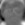
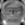
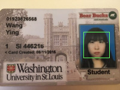
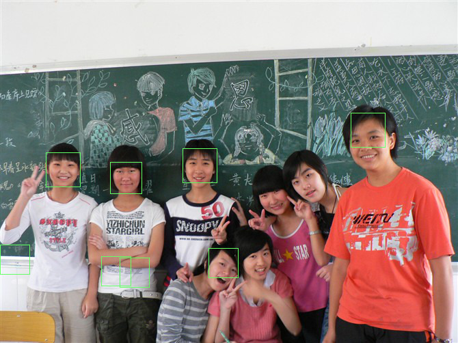

Project Description
Testing recognition with cropped class images
Steps
1. I use the cropped, neutral students to compute 10 eigenfaces. The following are the average face and eigenfaces.
| Average Face |
|---|
|  |  |
 | |||||||
2. Use the same set of images to compute a userbase.
3. Recognize the photos in the interesting images folder. There are 17 out of 24 matches, which is 70.83% accuracy with 10 eigenfaces. Here are the results:
| "interesting" faces | "neutral" faces | matched | mse | "interesting" faces | "neutral" faces | matched | mse |
|---|---|---|---|---|---|---|---|
| Y | 20307.2 | Y | 21203.4 | ||||
| N | 96316.9 |  |
Y | 9257.69 | |||
|
N | 23881.9 |  |
N | 146398 | ||
|
N | 76128.7 | N | 26764.8 | |||
 |
Y | 59347.2 | Y | 6016 | |||
| Y | 21256.7 |  |
N | 12600.2 | |||
| N | 58830.6 | Y | 35732.7 | ||||
| Y | 12619.8 | Y | 12281 | ||||
| Y | 11988.5 | N | 15118.1 | ||||
| Y | 33489.8 | Y | 14035.7 | ||||
 |
Y | 17835.8 | Y | 3597.13 | |||
| Y | 45850 | Y | 6058.43 |
4. Experiment with the number of eigenfaces used. Use the mean face plus 1 through 21 eigenfaces at a granularity of 2. Plot the result.
| # of eigenfaces used | 1 | 3 | 5 | 7 | 9 | 11 | 13 | 15 | 17 | 19 | 21 |
|---|---|---|---|---|---|---|---|---|---|---|---|
| # of faces correctly recognized | 7 | 10 | 12 | 15 | 14 | 18 | 18 | 17 | 17 | 17 | 17 |
Questions
1. Trends in the plots. If the amount of eigenfaces is too small, we will get really bad result because they cannot accurately describe each face's features. As the number of eigenfaces increases to a certain number, the accuracy remains the same.
2. Show some errors. The first pair in 2nd row, we can see the changing direction of face will influence the result. The second pair in the last fourth row, the change of mouth shape and the size of eyes will also influence the result greatly.
Cropping and finding faces
Steps
1. Use the eigenfaces file computed in the previous experiment.
2. Use the program to crop the group/test_single.tga image. Here is the result:
| Input image | Cropped image |
3. Use the program to crop a picture of myself.
| Input image | Cropped image |
4. Experiment with min_scale, max_scale, and step parameters to find ones that work accurately. After several try and error, min_scale=0.3, max_scale=0.6, step=0.01 are the best parameters to generate the marked image.
5. Mark the faces in two different group photos of students. List some correct and wrong results.
Successful:6. Mark a group picture of myself.
Then, I tried some other face databases such as The Database of Faces of AT&T Laboratories Cambridge. The database includes 10 different faces of 40 people, in total 400 faces. Then, I generate 40 eigenfaces of size 25x25 from these faces. And it gave a much better result than the previous one.
Still, in the second group picture, some faces cannot be recognized and some faces are only recognized above nose. I think these errors are because of the face direction.
| Marked(ATT database) | Parameters |
|---|---|
|  | min_scale=0.3 max_scale=0.6 step=0.01 |
|  | min_scale=0.3 max_scale=0.6 step=0.01 |
Verify Face
Questions
I tried 50000, 60000, 70000 as the MSE threshold and it turns out that 60000 works best. The method I used is simply writing a script and writing down 24x24 verifying MSE values, then computing the false negarive and false positive rate of each threshold. The whole data is included in the excel file for reference.
Using 60000 as the best MSE threshold, the false negative rate is 3/24 = 12.5%. The false positive is:
| 1 | 2 | 3 | 4 | 5 | 6 | 7 | 8 | 9 | 10 | 11 | 12 | 13 | 14 | 15 | 16 | 17 | 18 | 19 | 20 | 21 | 22 | 23 | 24 |
| 4.16% | 0% | 0% | 0% | 0% | 0% | 0% | 0% | 4.16% | 4.16% | 4.16% | 8.33% | 0% | 8.33% | 0% | 12.5% | 20.83% | 0% | 12.5% | 16.67% | 8.33% | 4.16% | 8.33% | 20.83% |
Bell & Whistles(Extra Points)
1. Speed up
I implement the speed up. without speed up, nrot is 2160698. after speed up, nrot is 1640.
2. Use other face database to get better recognization result.
Some faces in the images that previously cannot be recognized now can be recognized using the new 40 eigenfaces I generated from the AT&T database. So it is more accurate and robust than before.